01
Race for Dirigo
Wear the blue singlet in Maine and across New England, from local roads to USATF team opportunities.
Join or renewPhoto by David Colby Young

Maine running club | Competitive since 2002
Dirigo brings Maine runners together for committed training, team racing, and representing the state well.
Founded in 2002, Dirigo is a Maine-based running club created to establish a competitive Maine racing team, foster personal achievement, and give runners opportunities to train and race together.
The club values commitment, teamwork, sportsmanship, and a strong connection to Maine. Membership has no time or age requirements; runners who want to contribute to the team are welcome to reach out.
Dirigo is built around member coordination: training plans, race entries, team scoring, results, and the small work that keeps a Maine racing team moving.
01
Wear the blue singlet in Maine and across New England, from local roads to USATF team opportunities.
Join or renew02
Members use team channels to find long runs, workouts, daily miles, and runners in their area.
Membership details03
Members share race plans, report results, coordinate logistics, and show up for the Maine running community.
See recent resultsMembership is open to runners with a Maine connection who are committed to training, competition, teamwork, and good sportsmanship.
Join or renew online and the team can follow up with next steps, singlet sizing, and team communications.
Join or renewCoastal Run Maine helps keep Dirigo runners outfitted for the miles ahead. Members receive year-round discounts: 25% off shoes, 10% off fuel, and 10% off apparel.
Visit Coastal Run MaineRace dates, recurring series, and team-relevant events.